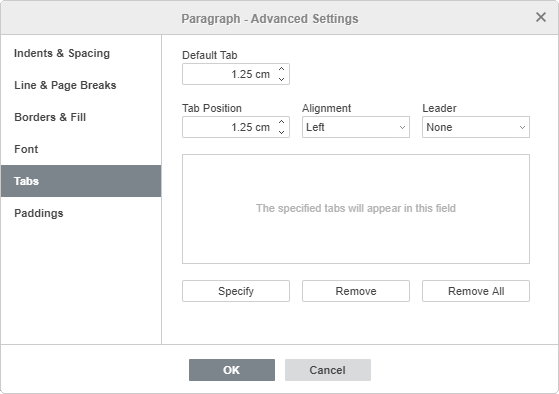

Podešavanje tabulatora
U Document Editor-u možete menjati tabulatore. Tabulator je pojam koji opisuje mesto na kojem se kursor zaustavlja nakon što se pritisne taster Tab.
Za podešavanje tabulatora možete koristiti horizontalni lenjir:
- Izaberite željeni tip tabulatora klikom na dugme u gornjem levom uglu radne oblasti. Dostupna su sledeća tri tipa tabulatora:
- Levi tabulator poravnava tekst sa leve strane na poziciji tabulatora; tekst se pomera udesno od tabulatora dok kucate. Ovakav tabulator će biti označen na horizontalnom lenjiru markerom Left Tab Stop.
- Centralni tabulator centrira tekst na poziciji tabulatora. Ovakav tabulator će biti označen na horizontalnom lenjiru markerom Center Tab Stop.
- Desni tabulator poravnava tekst sa desne strane na poziciji tabulatora; tekst se pomera ulevo od tabulatora dok kucate. Ovakav tabulator će biti označen na horizontalnom lenjiru markerom Right Tab Stop.
- Kliknite na donju ivicu lenjira na mestu gde želite da postavite tabulator. Prevucite ga duž lenjira da biste promenili njegovu poziciju. Da biste uklonili dodati tabulator, prevucite ga van lenjira.
Takođe možete koristiti prozor sa svojstvima pasusa za podešavanje tabulatora. Kliknite desnim tasterom miša, izaberite opciju Paragraph Advanced Settings u meniju ili koristite link Show advanced settings na desnoj bočnoj traci, a zatim se prebacite na karticu Tabs u otvorenom prozoru Paragraph - Advanced Settings.

Možete podesiti sledeće parametre:
- Podrazumevana kartica je postavljen na 1,25 cm. Ovu vrednost možete smanjiti ili povećati pomoću dugmadi sa strelicama ili unosom željene vrednosti u polje.
- Pozicija kartica se koristi za podešavanje prilagođenih tabulatora. Unesite željenu vrednost u ovo polje, preciznije je podesite pomoću dugmadi sa strelicama i pritisnite dugme Specify. Vaša prilagođena pozicija tabulatora biće dodata u listu u polju ispod. Ako ste prethodno dodali neke tabulatore pomoću lenjira, sve te pozicije tabulatora takođe će biti prikazane u listi.
- Poravnanje – koristi se za podešavanje potrebnog tipa poravnanja za svaku od pozicija tabulatora u gornjoj listi. Izaberite željenu poziciju tabulatora u listi, izaberite opciju Left, Center ili Right iz padajuće liste i pritisnite dugme Specify.
-
Lider – omogućava izbor znaka za kreiranje popune za svaku poziciju tabulatora. Popuna je niz znakova (tačkice ili crtice) koji popunjava prostor između tabulatora. Izaberite željenu poziciju tabulatora u listi, izaberite tip popune iz padajuće liste i pritisnite dugme Specify.
Da biste obrisali tabulatore iz liste, izaberite tabulator i pritisnite dugme Remove ili Remove All.